The current B1 next to three tweaks. Each keeps the punched-hole tear running notch to notch, the sun centred on it, Dawn coral and the sky gradient.
Every version is shown with ‘Altaria AI’, with the lowercase ‘altaria’ wordmark, at a true 16 px, and in one colour and reversed.
Round 2 and round 1 are unchanged.
“the top of the ticket currently takes up most of the logo and there's a lot of dead space there, so it looks off.”
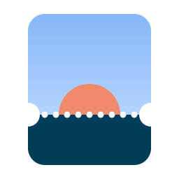
B1 current
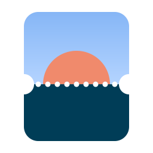
T1 Raised TearT2 Square Ticket (recommended)
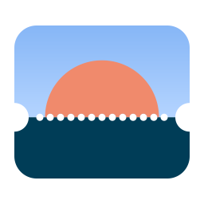
T3 Wide TicketB1
Current
as picked
Sky / stub
67 / 33
Empty sky above the sun
46% of the height
Sun width
50% of the ticket
Footprint
0.81:1 portrait
What it is
The tear sits at two-thirds, so the sky is two-thirds of the ticket.
The sun is half the ticket's width and sits on the tear, leaving a tall empty band of sky above it.
With ‘Altaria AI’
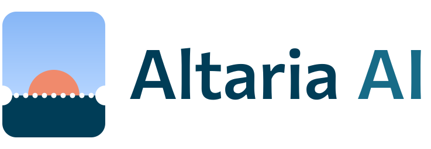
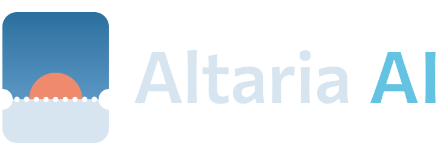
With the ‘altaria’ wordmark
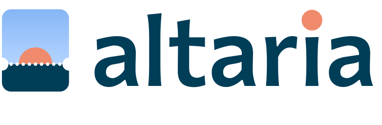
16 px check
colourone colourreversed
One colour and reversed, 64 and 32 px
The note in a picture: the empty sky above the sun is almost half the mark.
T1
Raised Tear
Sky / stub
56 / 44
Empty sky above the sun
30% of the height
Sun width
64% of the ticket
Footprint
0.81:1 portrait
What changes
The same portrait ticket, with the tear raised from 67% to 56% of the height.
The sun grows from 88 to 112 units wide, so it fills more of the smaller sky.
The notches and punched holes move up with the tear.
With ‘Altaria AI’
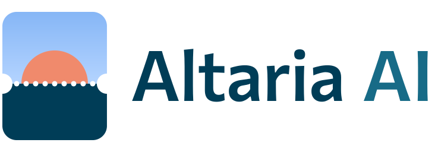
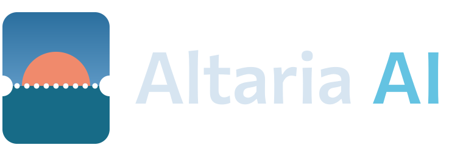
With the ‘altaria’ wordmark
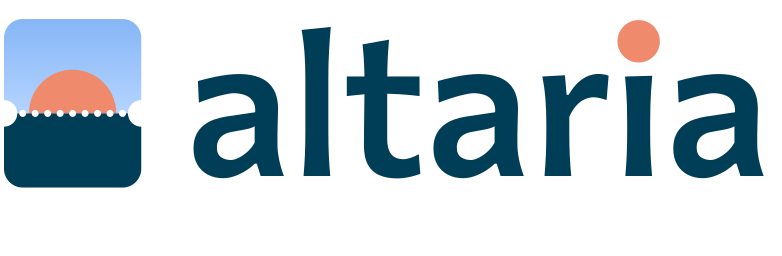
16 px check
colourone colour
reversed
One colour and reversed, 64 and 32 px
The smallest change. The sky is balanced, but the portrait shape still isn't square, and the stub is now a heavy dark half.
T2
Square Ticket
Recommended
Sky / stub
56 / 44
Empty sky above the sun
25% of the height
Sun width
62% of the ticket
Footprint
1:1 square
What changes
The ticket becomes a 204 × 204 square with a slightly softer corner, so its outline is already an app icon.
The tear is at 56%, and the sun is 62% of the ticket's width.
Eleven holes run notch to notch; one shows either side of the sun and the rest punch through its base, as before.
With ‘Altaria AI’
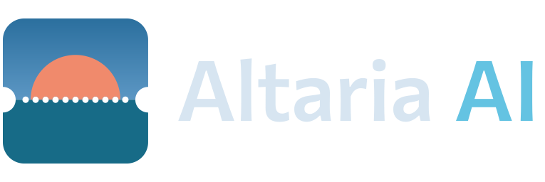
With the ‘altaria’ wordmark
16 px check
colourone colour
reversed
One colour and reversed, 64 and 32 px
Empty sky drops from 46% to 25% of the height. The sun is clear even at 16 px, and the square outline makes the strongest app icon and favicon.
T3
Wide Ticket
Sky / stub
60 / 40
Empty sky above the sun
23% of the height
Sun width
65% of the ticket
Footprint
1.15:1 landscape
What changes
The ticket is shorter and slightly landscape (220 × 192).
The tear is at 60%, and the biggest sun of the set (65% of the width) rises from it.
The pitch tightens to 13 holes, so the perforation still runs notch to notch.
With ‘Altaria AI’
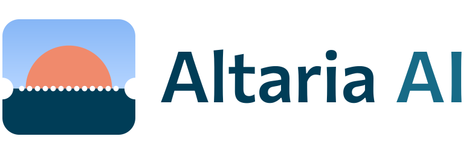
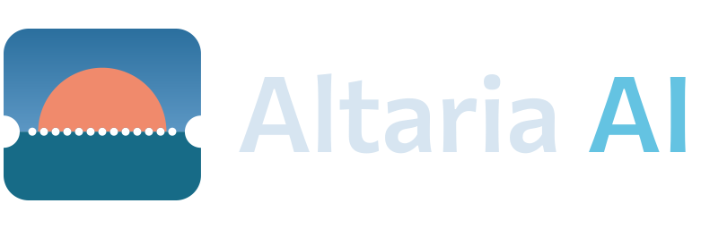
With the ‘altaria’ wordmark
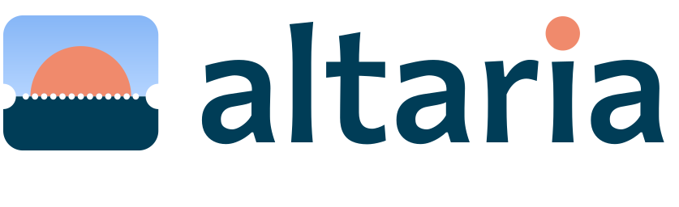
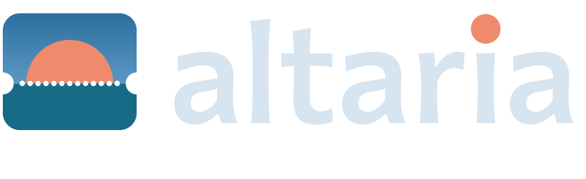
16 px check
colour
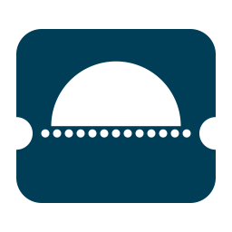
one colour
reversed
One colour and reversed, 64 and 32 px
The boldest sunrise, with the least empty sky (23%). It isn't square, and the sun nearly fills the sky from notch to notch, so it feels busier and less calm.
Recommendation: T2, Square Ticket
It fixes the note at the root. The empty sky above the sun drops from 46% to 25% of the height, and the sun becomes the clear subject, readable even at 16 px. The square outline doubles as the app icon and favicon, and it sits evenly beside both ‘Altaria AI’ and ‘altaria’.
One more change in dark mode
With a taller stub, round 2's pale dark-mode stub (#D7E5F1) became a bright slab. The tweaks use teal #176B87 for the stub on the night page, keeping sky over a darker base, as in light mode. B1 current is shown unchanged.
Next
Once a version is picked, the final kit rebuilds it with clean arcs (these concept files use finely sampled curves), a flat no-gradient master, a small-size cut and the icon sets.